library(usethis)
edit_git_config()• Edit '/Users/hannahbirnir/.gitconfig'Go to the github website

and signup with your email and password.

Once you have a github site, in the upper left hand corner on your github site create a repository for where you want files from your pending project to go. Name the repository whatever you will be calling your project. Select to have a readme file where you can post notes about the project. Select to make it private while you are working on int (this can be changed later).

Once you hit create you new repository should look something like this:

Check if you have git installed on your computer. For this you have to use terminal to check. In your terminal write
git –version
and you should get back your version number.

If you do not have git on your computer you may have to install it. For instructions on how to check and install git on your computer see this very helpful website or better yet this manual
Now that you have a github account and a local git on your computer you are ready to start working with git through R studio.
Open R-studio and start a new project. Choose a project with version control:

Select the option to clone a repository from git. What R studio will then do is to clone the repository you created on github locally on your computer.

So that R-studio knows which github local repository to clone you have to specify an external url that matches your username and the name of the new repository that you just created on github (Repository URL).
You also have to specify where your local git files are going to be located see (Create project as subdirectory of:).

Hit the create button and R studio will create a project site that should look something like this. Notice how the files replicate what is in

In case you run into trouble at this stage - and are not able to connect your files make sure that your local credentials (signup email matches the email you used to signup with github). To check this you can use:
library(usethis)
edit_git_config()• Edit '/Users/hannahbirnir/.gitconfig'Remember that you have to install the “usethis” package if it is not already on your computer.
If your git and hub have no problems communicating you can set about modifying your local files at will, adding files and changing them.

Each time you add a new file in your local directory or change it in some way it will appear in your git tab like so:

Notice that because I have not modified the README file that was imported from github this file does not appear in my git tab.
The final step is to commit the changes I have made to my local files to the github repository. For this purpose I have to commit the files I want to update (I only commit the files I wish to update) and then I need to push them to the external repository.
To do this I first select the files that I want to commit. Next I hit the commit button.

When I hit the commit button another window pops up where I can write myself notes about the changes I am committing.

Once I hit commit R-studio knows which local files I want to change in my external depository. Note that I can work locally and commit many files and then work on other files and commit them later. Commit only commits changes to my files locally. The last step then is to push all my locally committed files to my external repository.
From within my project I simply push the push button in my now empty git tab and my external repository is updated.


Github then tracks all of the changes in each file and new files added in each commit while also updating the main file.
This is very nice if you are working on a project - like a website that you might want to change frequently. You can simply open the project - make a change to any one part of the project and commit those changes to github. Imagine, for example, a website where you post new data and other information as it becomes available.
One of the most useful things about github is the ability to work collaboratively.
First, in order to work collaboratively, you may need to associate your RStudio with a project in GitHub that you did not create. If you created the project, do the following to add collaborators:
Go on the Github website to Settings > Manage Access > Invite a collaborator.

Your teammate should accept the invite in their email.
Once this is complete, you can use the steps above to associate your RStuido with the GitHub project.
One important aspect of collaboration in Github is the ability to pull changes. This allows you to update your code to align with changes pushed by collaborators.
Using the down arrow button, RStudio goes to the GitHub repo, grabs the most recent code and brings it into your local editor. (Pulling regularly is extremely important if you’re collaborating, though if you’re the only one working on an RStudio project and associated GitHub repo, you know your local code matches what’s on GitHub so it’s less important.)
To pull, click the blue down arrow on your Git tab to see if you have changes to pull. If collaborating, you might run into merge conflicts.
When you pull your project updates to show the changes your collaborator has made to the project. Look at the dates.
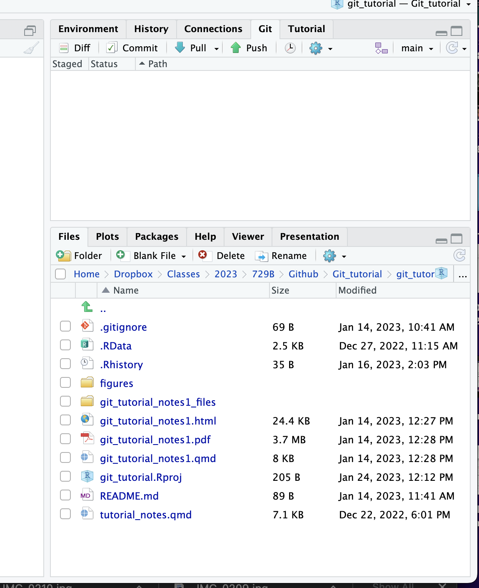
and
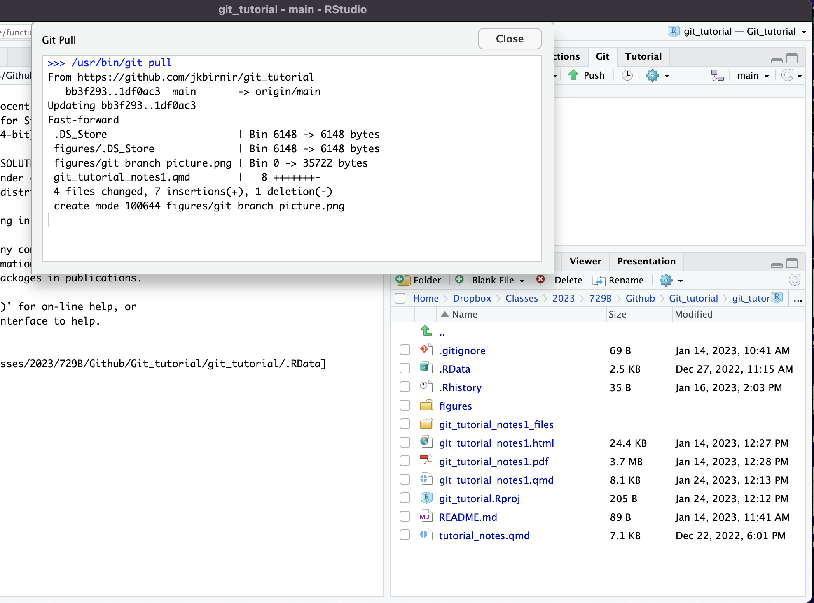 You can also track the changes on github if you want more details.
Go to your github project:
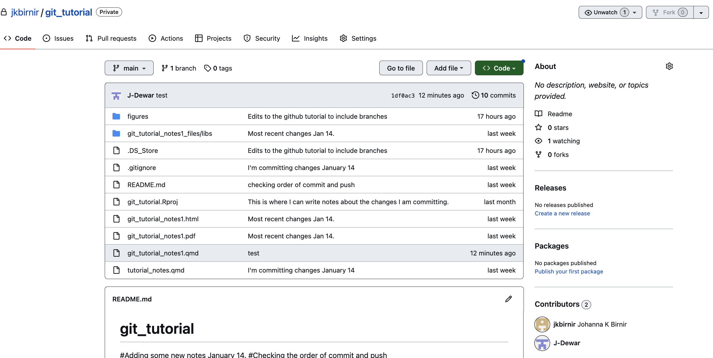 There you see who are the collaborators and when each item was updated. For even more information click on any of the files (here the qmd file)
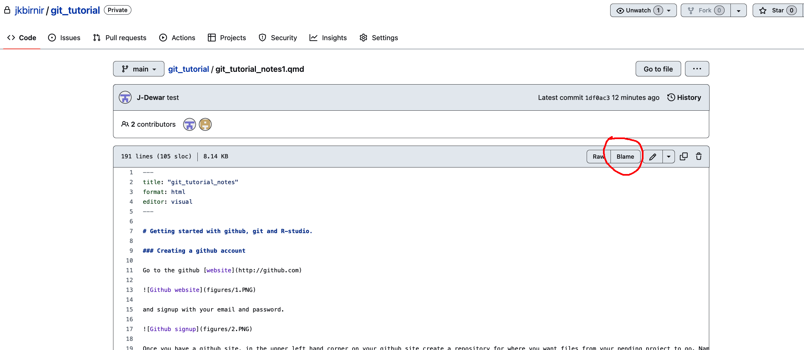 Here you see the history of the development of the project and if you want to see who made what changes when push the blame button.
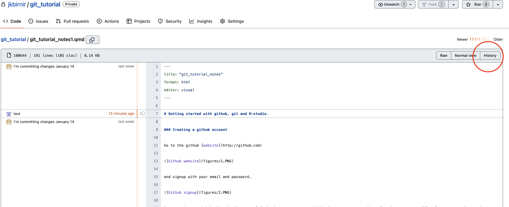 The blame allows you to blame whoever - mostly yourself ;) is responsible for making changes to your project.
If you want more of an overview - then push the history button and you get a summary of changes:
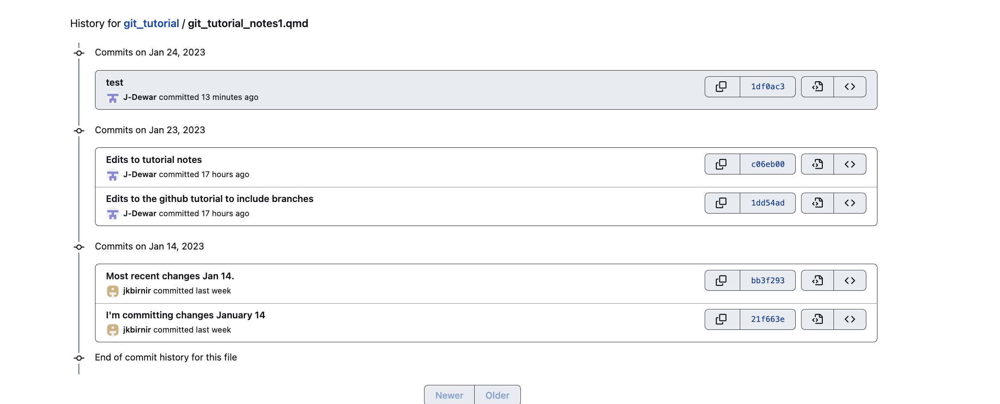 In sum this is the workflow when you and your collaborator are both working on the main project and either one of you can make changes to the project.
When someone invites you to a project and to work on the main as here:
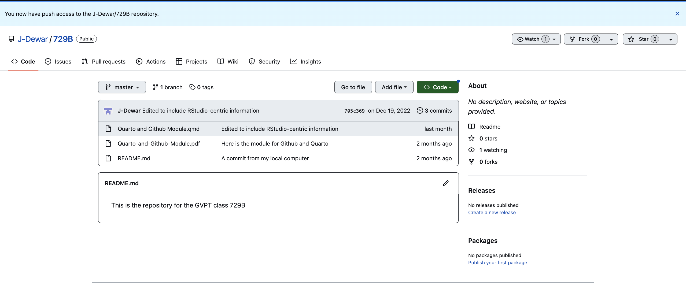
You can open the project locally as you would any other version control project (see earlier steps in the tutorial)
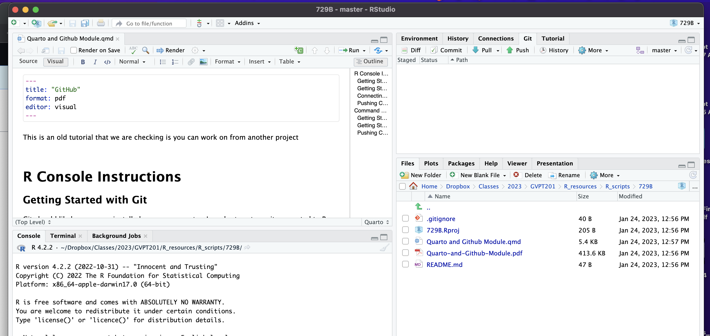
Once you are done changing your files locally - you then go through the same steps of committing and pushing. Which results in this message telling you the process was successful.
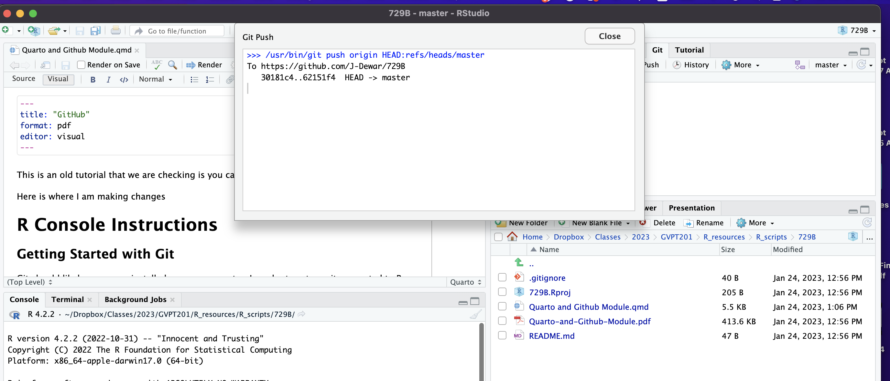
aand your changes will show up in the remote directory on github.

Sometimes you have a hirearchy - when one of you is the lead (author for example, or if you are working with an RA etc). where you want to review and approve any changes before they are made. In those cases you work with branches.
In order to create new branches, go to the ‘git’ tab on your RStudio console and click ‘new branch’.
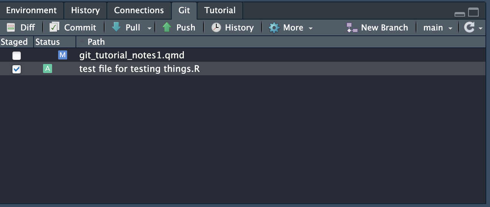
You can then populate that branch the way you want and ask your associate to work on that branch only (your associate can also create a branch to be reviewed later)
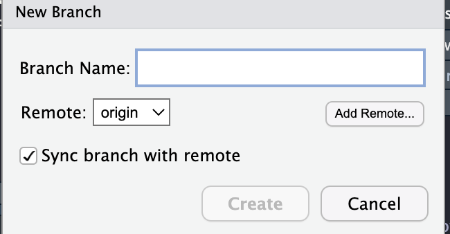
Then click create and you have made the new branch.
You can see your branches like so:
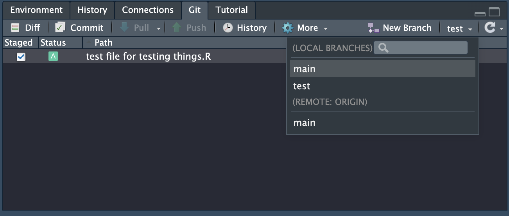
Then simply create the new branch and you’re done.
If you click on the new branch, you will then see this as you switch:
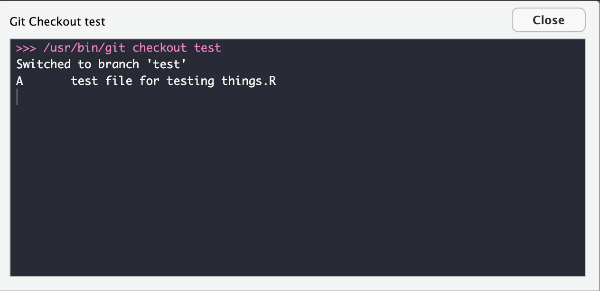
This branch will initially not be published to the repo. You can publish it via the github website or the github desktop client.
You will then see this on your github page:
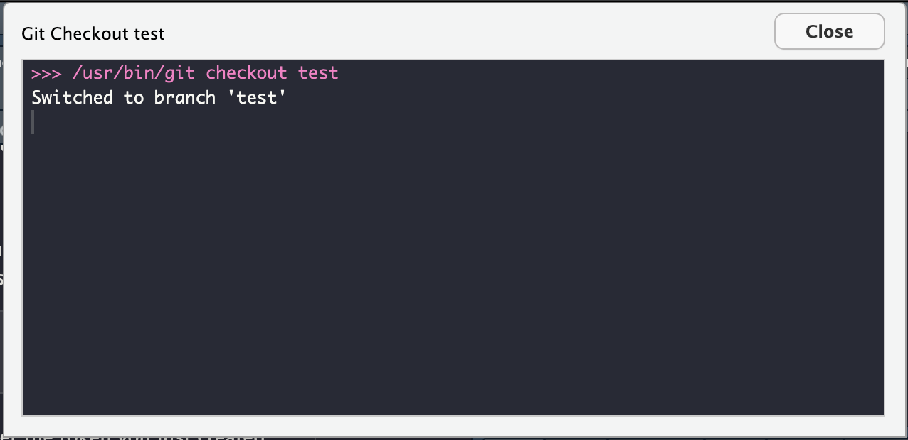
If you try to push when you have not pulled changes that your collaborator has made on a main branch you get the following message:
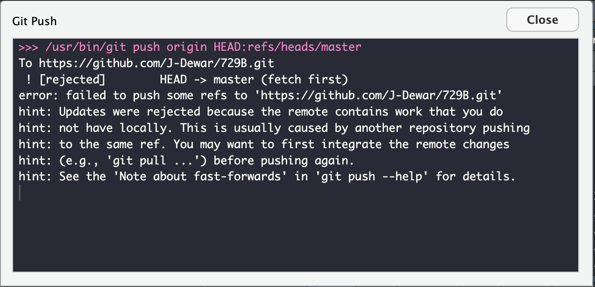
If you try to pull before pushing changes that you have made to documents that your collaborator has changed you get the following warning

Here the program is creating branches for you so that changes are not lost. The solution to #1 is to pull before you start making ay changes to make sure you are working on the most up to date version. The solution to #2 when you both have made changes that need to be reconciled is to
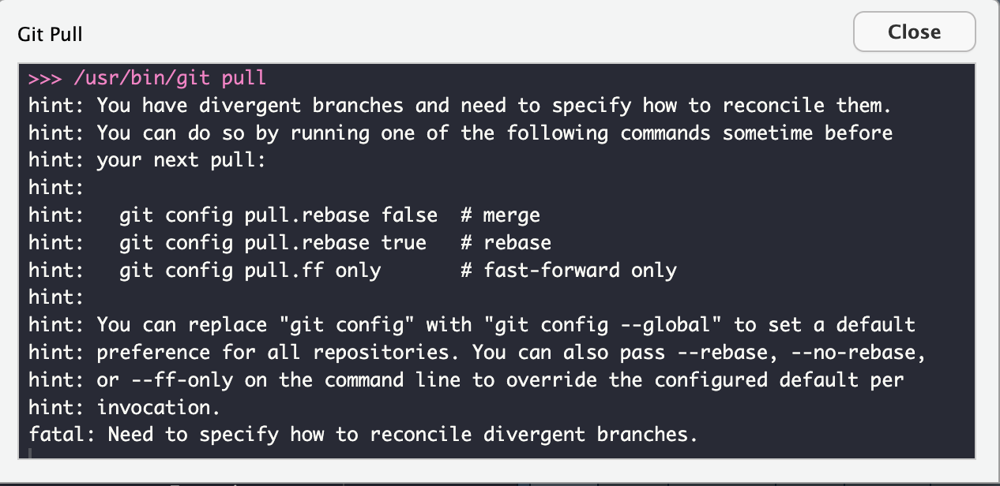
then you pick from the options merge rebase and fast-forward
for a detailed explanation of the differences between the different options see for example this website
To employ the merge solution go to terminal and write:
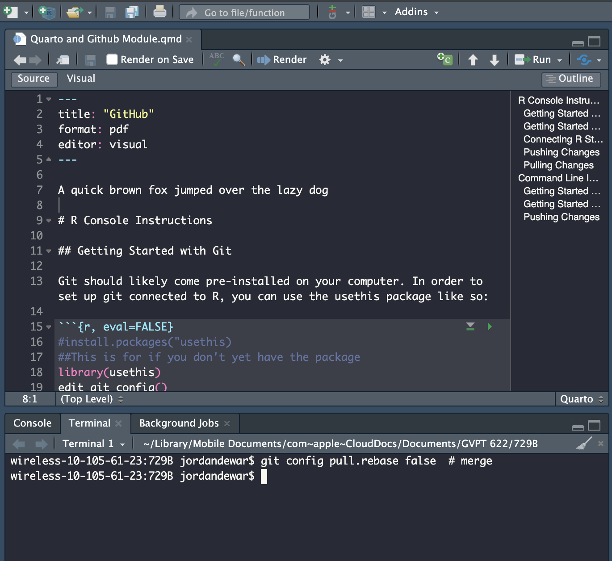
then you can pull the document. Once you pull the document you can scroll through and see where your merger conflict occurred.
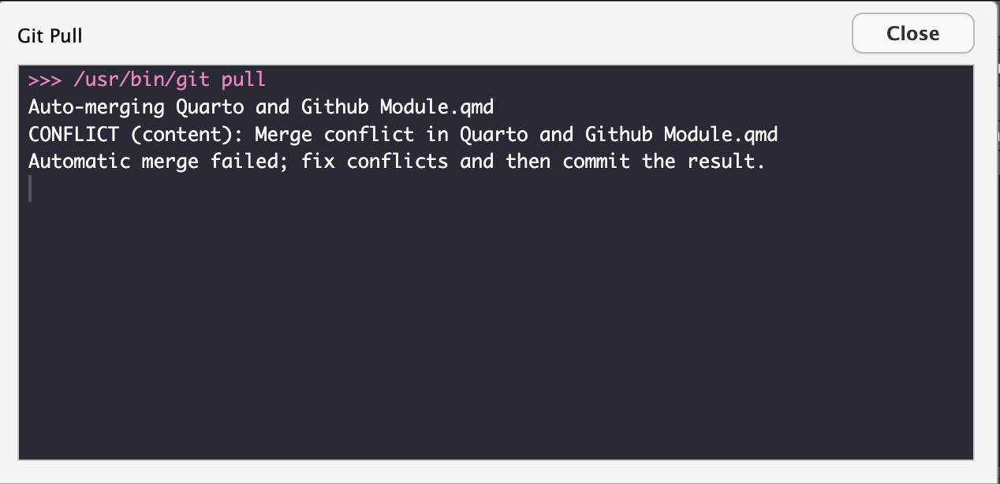
You then have to resolve this conflict save and now you can push.
You can look to this article for other useful information for keeping good Git hygiene when collaborating.
Briefly the first four rules of thumb are:
Additionally the article discusses optimal git branch for working together.
To better understand these
In order to associate an existing RStudio project with Git you will need to create a Git repository as described above and then follow the steps below.
✔ Setting active project to '/Users/hannahbirnir/Dropbox/Classes/2023/729B/
Github/Git_tutorial/git_tutorial'You will then get a prompt asking if you want to commit the files you’ve already created to your repo. Select yes (option 1). You should then also see the git tab.
• Call `gitcreds::gitcreds_set()` to register this token in the local Git credential store
It is also a great idea to store this token in any password-management software that you use
• Open URL 'https://github.com/settings/tokens/new?scopes=repo,user,gist,workflow&description=DESCRIBE THE TOKEN\'S USE CASE'You will then get a number of options to select about what your token use case will be. This will be project-dependent.
You can learn more about the selections [here](https://docs.github.com/en/developers/apps/building-oauth-apps/scopes-for-oauth-apps) to help guide you in your process.
#library(gitcreds)
#gitcreds_set()When prompted to enter a token or password, enter the token you just created. If you have entered one previously, you will be prompted to choose if you’d like to keep your credentials. If nothing has changed, select 1 and keep things as they are. If they have, follow the most applicable selection.
A lot of problems can be resolved by examining the Github desktop client. It’s free and you can download it from the Github website.